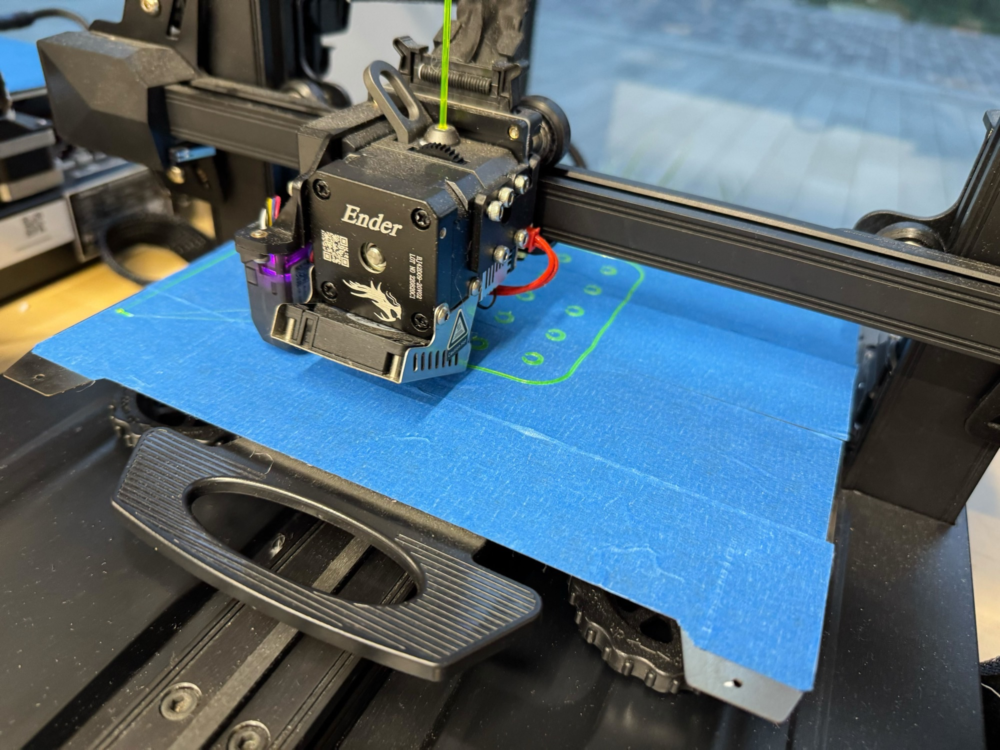

事前調べ
サーキュラープロジェクト事前調べ1
サーキュラーエコノミーについて調べました。従来の3Rだけではなく、原材料の調達から製品デザイン、リサイクル資源の活用までを前提に設計することで、廃棄物という概念をなくすことが目標だと分かりました。
 Hikaru
Hikaru
Seminar Activity
サーキュラーエコノミーをテーマに、株式会社ダイイチと連携し、GREEN×EXPO 2027に向けて制作を行ったゼミ活動の記録です。
Project Overview
従来の3Rだけでなく、原材料の調達から製品デザイン、資源の再活用までを考えるサーキュラーエコノミーについて学びました。活動では、調査内容をもとに制作案を出し、ゼミ内発表に向けて記録を重ねています。
Activity Log
事前調べ
サーキュラーエコノミーについて調べました。従来の3Rだけではなく、原材料の調達から製品デザイン、リサイクル資源の活用までを前提に設計することで、廃棄物という概念をなくすことが目標だと分かりました。

事前調べ
サーキュラーデザインについて調べました。廃材や余剰素材を新しい製品に活用する事例を参考に、素材の選び方や、制作段階から循環を考えることの重要性を整理しました。

第1回 活動記録
第1回目の活動が始まりました。使用する素材をもとに、防暑対策につながる制作案を検討しました。素材の特性を活かしながら、帽子やフードのような形が良いのではないかという案が出ました。

第2回 活動記録
実際に素材を観察し、特徴を調べました。グループでは通気性に注目し、ネクタイやスカーフ、扇子など、身につけやすく涼しさにつながるアイデアを出しました。

第3回 活動記録
中間発表を行いました。持ち運びができるフードや、日差しを避けるフードの案について発表しました。メンターの方から、素材を活かす部分にもっと時間をかけると良いというアドバイスをいただきました。

第4回 活動記録
最終発表が近づき、制作に集中しました。私はフードの一部の制作を担当しました。布の部分とフレームの作業を進め、形にするための調整を行いました。

第5回 活動記録
最終発表を行いました。完成がぎりぎりになりましたが、発表に間に合わせることができました。班としてベストアイデア賞をいただけたことは、とても嬉しい成果でした。

第6回 活動記録
企業の方に、制作したフードのブラッシュアップについて相談されました。最終発表時に実現できなかった部分を中心に、改良を重ねていきたいと考えています。
まとめ / 学んだこと
調査、制作、発表、改善までを通して、社会課題を扱う制作では、素材の特徴を理解することと、見る人に伝わる形へ編集することの両方が大切だと学びました。
追記：私のゼミで制作した一部の作品がGREEN×EXPO 2027にて利用できるようになることが決まりました。